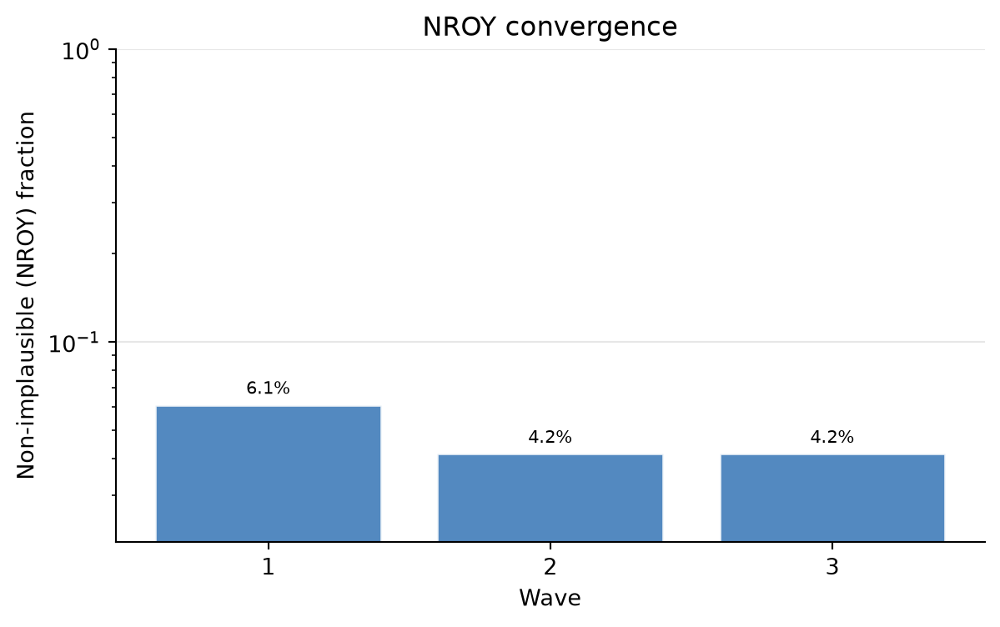
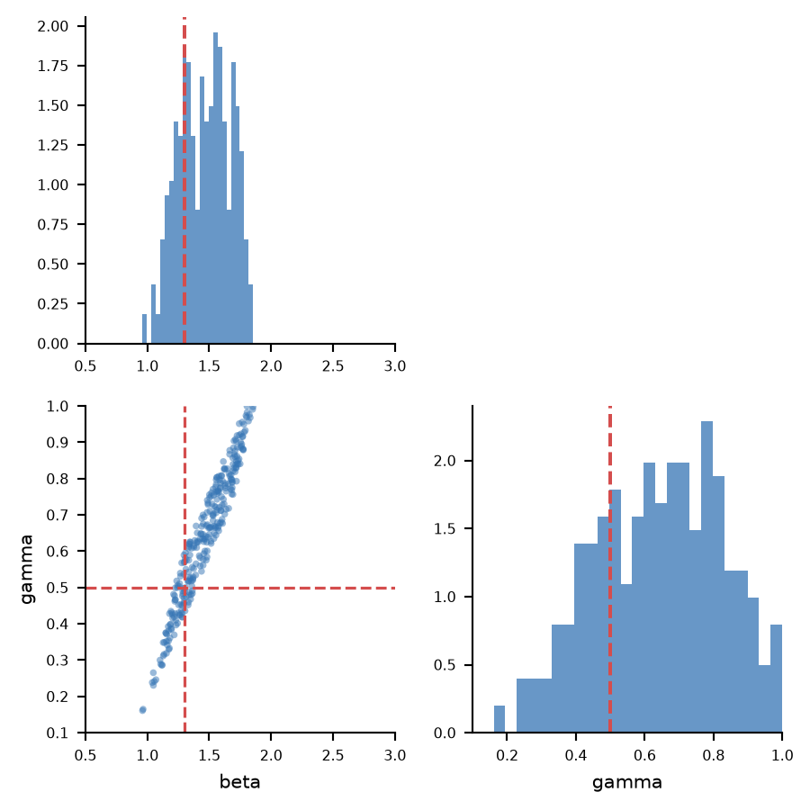
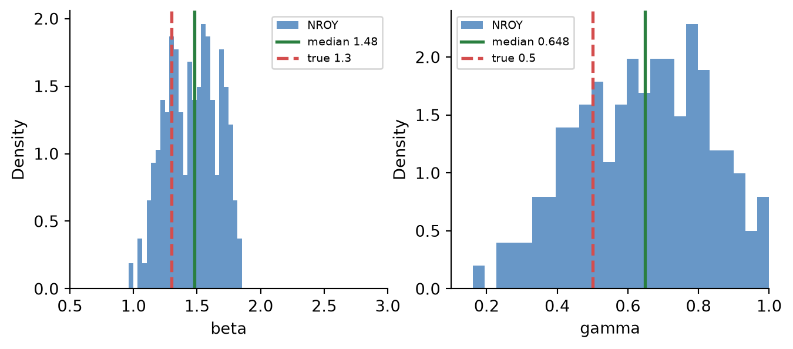
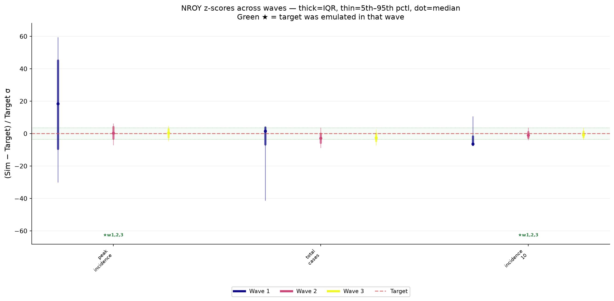
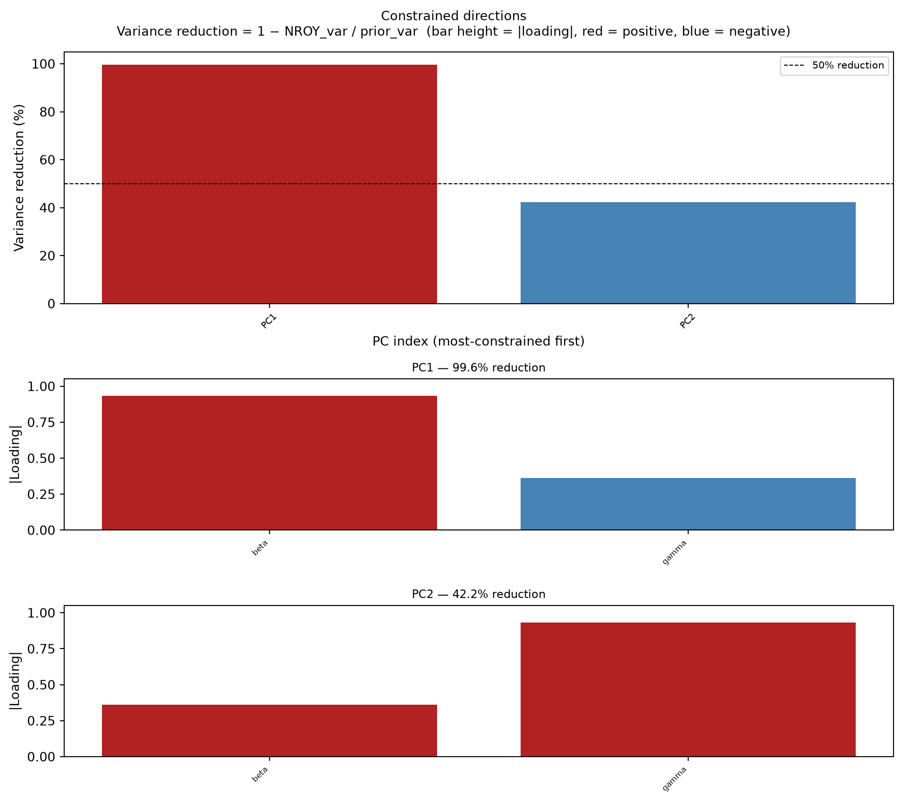
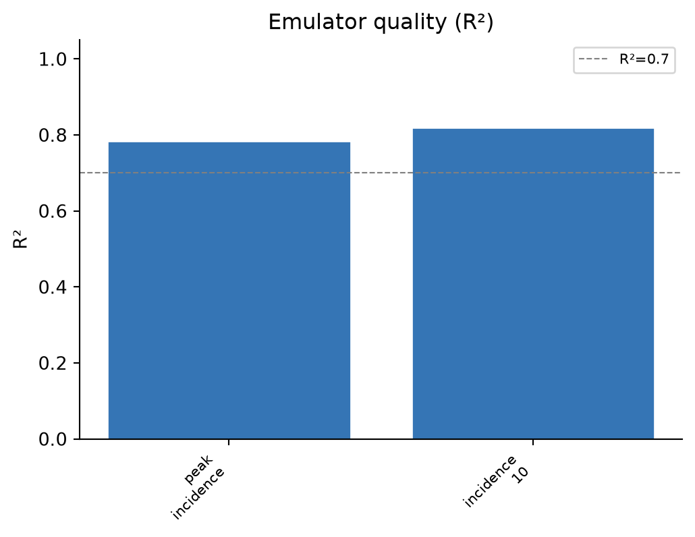
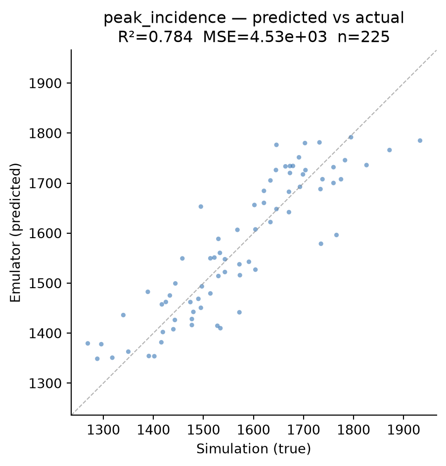
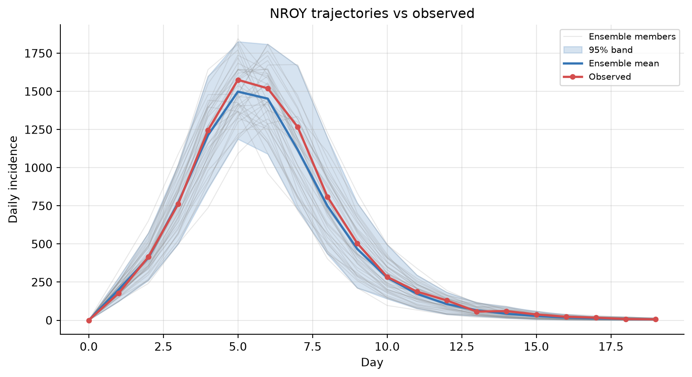

History matching produces a lot to look at — emulator fits, the shrinking plausible region, how close the simulated outputs sit to their targets. This notebook tours the built-in plotting and display API on the stochastic SIR model used throughout these tutorials.
Every plot_* method returns Matplotlib axes and accepts an ax= argument, so the figures render inline and compose into your own layouts. The same figures are written to the engine’s output_dir after each wave.
Each figure is explained inline as we go; the plotting API reference lists every plot_* function.
import numpy as npimport pandas as pdimport matplotlib.pyplot as pltimport historymatching as hmimport logging; logging.getLogger("historymatching").propagate =False# keep INFO logs out of the rendered docsfrom model import SIR, generate_observed_data%matplotlib inlinenp.random.seed(0)
WARNING: All log messages before absl::InitializeLog() is called are written to STDERR
I0000 00:00:1793777287.667182 3732 port.cc:153] oneDNN custom operations are on. You may see slightly different numerical results due to floating-point round-off errors from different computation orders. To turn them off, set the environment variable `TF_ENABLE_ONEDNN_OPTS=0`.
I0000 00:00:1793777287.667639 3732 cudart_stub.cc:31] Could not find cuda drivers on your machine, GPU will not be used.
I0000 00:00:1793777287.705074 3732 cpu_feature_guard.cc:227] This TensorFlow binary is optimized to use available CPU instructions in performance-critical operations.
To enable the following instructions: AVX2 AVX512F AVX512_VNNI AVX512_BF16 AVX512_FP16 AVX_VNNI AMX_TILE AMX_INT8 AMX_BF16 FMA, in other operations, rebuild TensorFlow with the appropriate compiler flags.
WARNING: All log messages before absl::InitializeLog() is called are written to STDERR
I0000 00:00:1793777288.576783 3732 port.cc:153] oneDNN custom operations are on. You may see slightly different numerical results due to floating-point round-off errors from different computation orders. To turn them off, set the environment variable `TF_ENABLE_ONEDNN_OPTS=0`.
I0000 00:00:1793777288.577090 3732 cudart_stub.cc:31] Could not find cuda drivers on your machine, GPU will not be used.
/home/runner/work/historymatching/historymatching/.venv/lib/python3.13/site-packages/gpflow/versions.py:1: UserWarning: pkg_resources is deprecated as an API. See https://setuptools.pypa.io/en/latest/pkg_resources.html. The pkg_resources package is slated for removal as early as 2025-11-30. Refrain from using this package or pin to Setuptools<81.
import pkg_resources
Set up and run a calibration
We recover the transmission/recovery rates of a synthetic outbreak, then use the result to demonstrate each plot. (See Basic Workflow for the workflow itself in detail.)
Bayes Linear theta optimization did not converge: ABNORMAL: . The fitted model may still be usable.
Completed 3 waves.
Text summaries
engine.get_status_summary() folds the per-wave convergence and the surviving parameter ranges into one report. engine.nroy_summary() returns the same per-parameter information as a tidy DataFrame.
print(engine.get_status_summary())
=== History Matching Status ===
State: completed
Progress: 3/3 waves
Acceptance rate: 7.6%
Total samples generated: 19,671
Total samples accepted: 1,800
Emulators trained: 6
[OK] Simulator function configured
[OK] All waves completed successfully
The NROY fraction is the share of fresh prior samples passing all emulator constraints so far. A steadily falling fraction means the calibration is successfully ruling out parameter space.
engine.plot_convergence();

The NROY parameter cloud
The headline result: a corner plot of the non-implausible region — marginals on the diagonal, pairwise scatter below. We overlay the known true values with truth=.
truth = {"beta": beta_true, "gamma": gamma_true}engine.plot_nroy(truth=truth);

plot_marginals shows just the one-dimensional posteriors, with the sample median and the true value marked.
engine.plot_marginals(truth=truth);

Z-scores vs targets
For every target, the distribution of (simulated - target) / target_std across the NROY samples, by wave. Bands inside the green ±threshold region and centred on zero are consistent with the data.
engine.plot_zscores();

Constrained directions
A PCA view of which combinations of parameters the data constrained most — useful for spotting non-identifiable directions that marginal plots miss.
engine.plot_constrained_dims(n_top=2);

Emulator quality
The emulators are only trustworthy if they reproduce the simulator. Inspect the fit per feature for the final wave.
final = results[-1]final.quality_table()
r2
mse
n_train
peak_incidence
0.783834
4534.473859
225.0
incidence_10
0.819556
1545.006917
225.0
final.plot_emulator_quality();

final.plot_predicted_vs_actual("peak_incidence");

Ensemble fan plot vs observed data
History matching constrains parameters; to check the outputs, re-run the simulator at NROY parameter sets and compare the trajectories to the observed data. hm.HistoryMatching.plot_ensemble_fan is model-agnostic — give it a 2-D array of trajectories and an observed series.
nroy = engine.get_nroy_samples(40, method="lhs") # unbiased drawtrajectories = np.array([ SIR(beta=r["beta"], gamma=r["gamma"], s0=population_size - n_seed, i0=n_seed).get_incidence()for _, r in nroy.iterrows()])hm.HistoryMatching.plot_ensemble_fan(trajectories, observed=incidence_obs.values, xlabel="Day", ylabel="Daily incidence", title="NROY trajectories vs observed");

Domain-object views
ParameterSpace, ObservationData, and EmulatorBank each have a summary() and (where it makes sense) a plot.
All of these methods return Matplotlib axes, so you can drop them into your own multi-panel figures (as above) or save them with fig.savefig(...). For the full catalogue of plotting functions, see the plotting API reference.